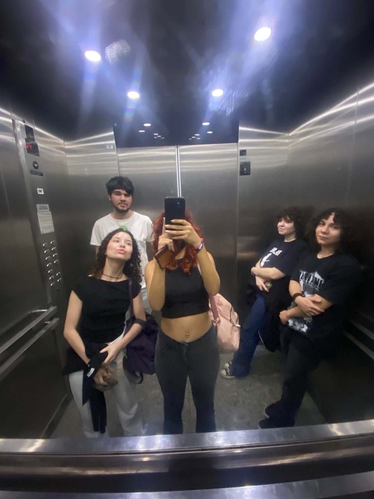

Sobre o Projeto
Este é um projeto acadêmico criado pelos UNIPIANOS LIJA (Unipianos Lucas, Iguinho, Jwylly e Aghata) do primeiro semestre do curso de ciências da computação no câmpus Marquês, para conscientizar sobre o impacto ambiental do lixo eletrônico, e fornecer algumas orientações das melhores práticas para o descarte responsável desses resíduos.
Feito para o trabalho de extensão da UNIP, mas a gente não se importa se outras pessoas quiserem usar ou compartilhar este guia.
Sobre a Equipe

A equipe é composta por estudantes de ciência da computação, incluindo: Aghata Cino, Igor Araujo Sales, Jwylly Gittens e Lucas Barros cada um com seu histórico e experiência única que contribuiram para a execução deste projeto.
Contato
Tem perguntas ou sugestões sobre nosso projeto? Você NÃO pode entrar em contato conosco através do GitHub ou enviar um email. NÃO quero ouvir suas ideias para melhorar este guia!